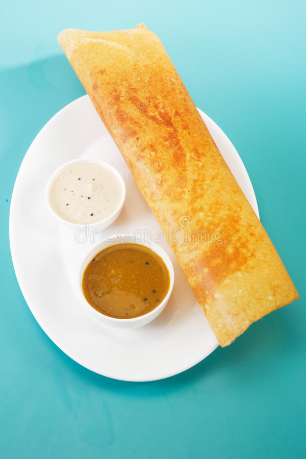
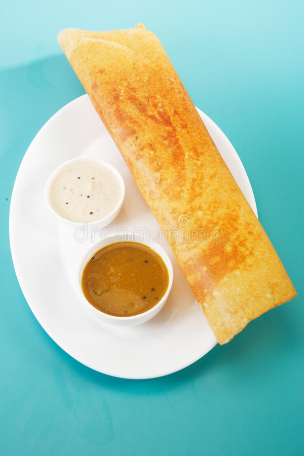
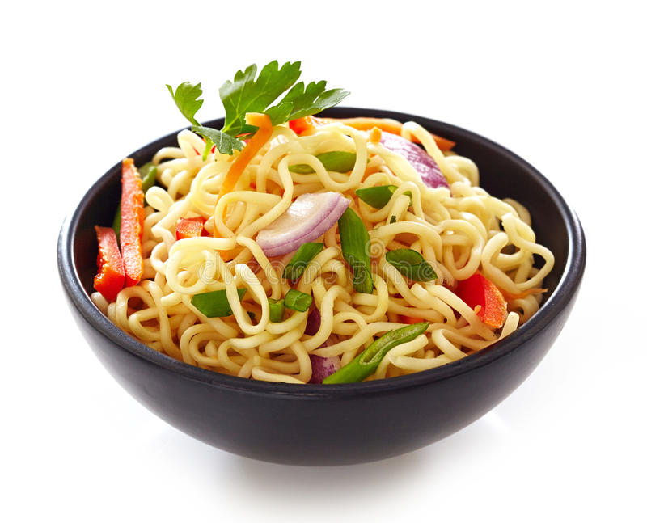
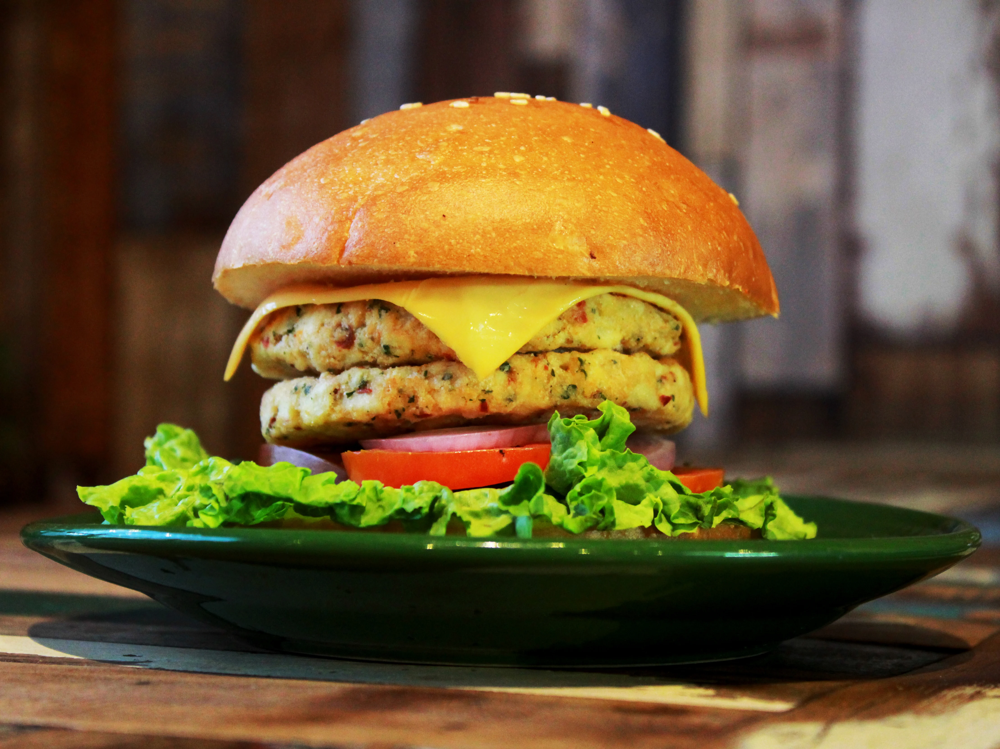

Restaurant
 

Dosas originated in South India, but its precise geographical origins are unknown. According to historian P. Thankappan Nair, dosa originated in the town of Udupi in present-day Karnataka

A samosa or singara is a fried South Asian pastry with a savoury filling, including ingredients such as spiced potatoes, onions, and peas. It may take different forms depending on the region.

It is a combination of chana masala (spicy white chickpeas) and bhatura/puri, a deep-fried bread made from maida. Although it is known as a typical Punjabi dish, It is originally a culinary dish.

Spring rolls are rolled appetizers or dim sum commonly found in Chinese and other Southeast Asian cuisines. The kind of wrapper, fillings, and cooking technique used, as well as the name.
Noodles are a type of food made from unleavened dough which is either rolled flat and cut, stretched, or extruded, into long strips or strings. Noodles are a staple food in many cultures
Western influence has made its way to India, and hamburgers are no exception. The meat patty has become a popular food in India, combining the American-style burger with traditional India.